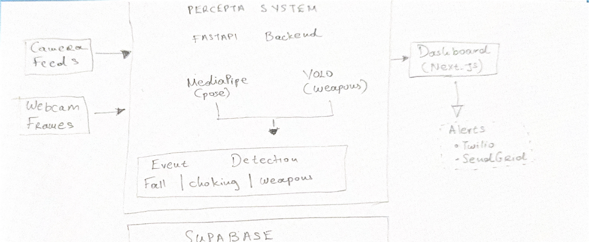
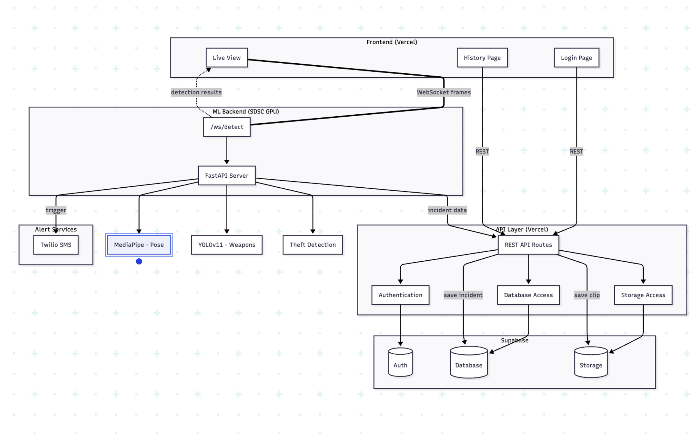
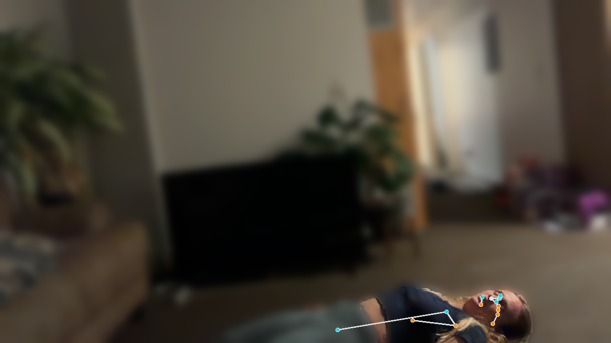
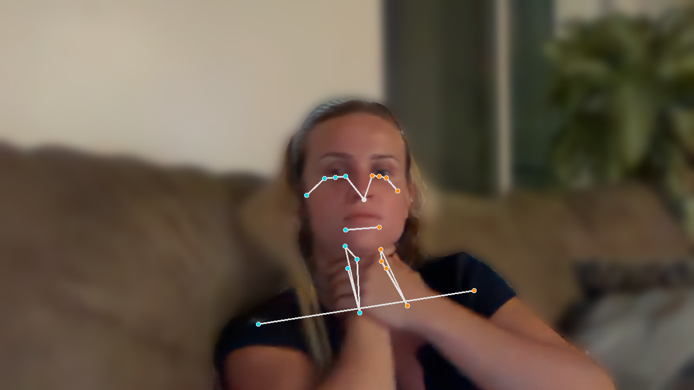
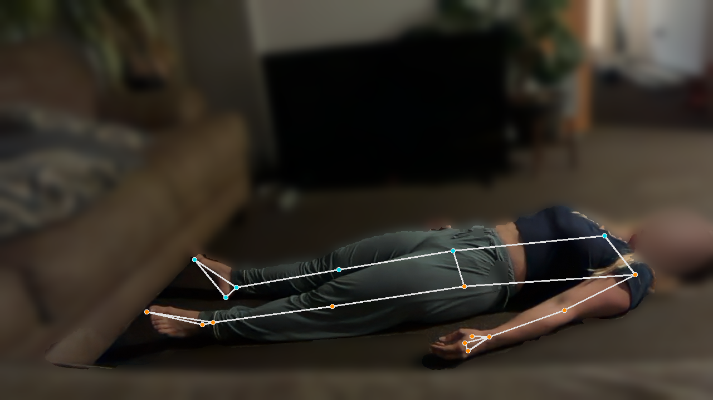

Most security cameras only matter after something has already happened. Perceptra watches live video and identifies medical emergencies as they occur — a fall, a person choking, a body that has stopped moving — then routes an alert to someone who can respond.
Both clips are the real console, recorded as it ran. No mock-ups: the box, the label and the alert are what the pipeline produced.
Before any camera is connected, Perceptra has to explain itself in a few seconds. I designed the landing page and the visual identity: a dark console, one particle sphere, and a single promise — from cameras to instant alerts.
A camera in a care facility, a store, or a stairwell records everything and understands nothing. When someone collapses, the footage exists — but it is only watched afterward, during an investigation, once the outcome is already fixed.
For medical emergencies that delay is the entire problem. The difference between a fall that is noticed in thirty seconds and one noticed in thirty minutes is not a difference in evidence quality. It is a different outcome for the person on the floor.
The footage was never the missing piece. Attention was.
As Product Owner I had to narrow an ambitious pitch — "detect crime, suspicious behavior, and medical emergencies" — into something a six-person team could genuinely demonstrate in the time we had. Three decisions shaped everything downstream.
These two are visually unambiguous. A body horizontal on the ground is a detectable geometric fact. "Suspicious behavior" is not — it is a judgment call that invites bias and produces false positives we could not defend. Starting with the unambiguous cases meant the demo would be honest.
I pushed the team away from evaluating on curated images. A model that scores well on a clean dataset can fail completely on real webcam input — motion blur, bad lighting, partial framing. Running against a live feed from day one surfaced those failures while we still had time to fix them.
I took pose-based medical detection; a teammate took YOLO weapon detection. Two independent models, one shared scoring layer. This let both tracks move in parallel without blocking each other, and kept the integration surface small and explicit.
Before any model was written, I drew the full system — how a frame travels from a camera, through inference, into a severity score, out to a person. Sketching it by hand first was deliberate: it forced the team to argue about the boundaries between components while they were still cheap to move.

That sketch became the formal system diagram the team built against — the same shape, with the deployment boundaries, transport protocols, and data paths made explicit.

A camera or webcam streams video at 30 fps. Each frame is a still image of the space — a room, an aisle, a hallway.
Frames reach the FastAPI backend in real time over HTTP or WebSocket.
MediaPipe extracts 33 body landmarks — shoulders, hips, wrists, ankles. YOLO scans the same frame independently for weapons.
Geometric rules run over the landmarks to classify the pose into a specific event, or into nothing at all.
The event receives a severity from 1 to 4 and is written to Supabase with a timestamp, event type, confidence, and camera ID.
Severity determines the channel — SMS through Twilio for urgent events, email through SendGrid for records, and a live push to the Next.js dashboard.
I built the medical detection pipeline on MediaPipe pose estimation. Rather than training a classifier on emergency footage — which barely exists, and which raises obvious consent problems — I defined each event as a geometric relationship between body landmarks. The logic is legible, and when it fails you can see exactly why.
The torso goes horizontal and the body sits in the lower half of the frame — orientation alone is not enough, since a person can bend over while standing.
Both wrists rise to the throat and stay centered on the body's midline. The universal choking sign, expressed as landmark positions.
The most important signal is absence. A person who has fallen and then stops moving entirely is in a different category from someone who falls and gets up.
The unresponsive case is the one I am most satisfied with. Fall detection alone produces constant noise — people sit on floors, stretch, play with pets. Adding a temporal condition on top of a spatial one filters nearly all of that away, because the thing that actually distinguishes an emergency is not the fall. It is failing to get back up.
A fall is an event. Not getting up is an emergency.
I built a live webcam demo that runs the full pipeline and auto-captures a frame whenever an event fires. These are unedited captures — the overlay shows the actual landmarks the classifier used to make each call.



I also wrote a false-positive analysis script to work back through captures the system got wrong. Most early errors came from the same source: treating body orientation as sufficient on its own. That finding is what produced the second condition in every rule above.
An alert system that treats loitering and a weapon identically trains people to ignore it. I defined a four-level severity scale so the response channel could scale with the actual stakes — and so a human always stays in the loop on the ambiguous middle.
This connects to a principle I set for the product early on: the AI detects, humans confirm. The system is built to raise attention, not to render verdicts. Video also stays local wherever possible — in a product pointed at cameras in spaces where people live and work, that constraint is not optional.
For the final presentation we did not describe Perceptra, we ran it. The demo went from a live camera to a reviewed incident on a deployed system, and every part below was shown working. Alongside the technical work I ran 1:1s with each developer to unblock their features.
The technical learning was pose estimation and threshold design. The larger one was about sequencing: my most useful contribution as Product Owner was not adding scope but removing it. Cutting "suspicious behavior" early is what made a real demo possible, and it is also the decision I would defend hardest — that category was never going to be defensible at the accuracy we could reach.